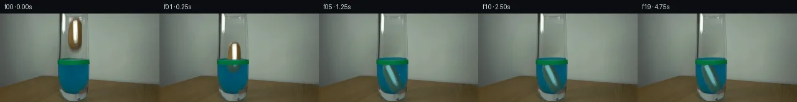

![首帧]()

Round 00
2026-11-05T16:08:19.562321+00:00像素候选变化代码 +204/−0inspection 更新
pixels 9a53dc95cd335a89 · code e7618def2f2bd32e
查看本轮 generate.py 真实 diff
--- previous/generate.py
+++ current/generate.py
@@ -0,0 +1,204 @@
+"""Source-image pixel continuation; no renderer, network, or learned model."""
+from pathlib import Path
+import json
+import math
+import numpy as np
+from PIL import Image, ImageDraw, ImageFilter
+from scipy.ndimage import gaussian_filter
+import cv2
+from artifact_io import save
+
+ROOT = Path(__file__).resolve().parent
+W, H = 256, 144
+S = 4
+original = np.asarray(Image.open(ROOT / 'first_frame.png').convert('RGB'))
+source = original.astype(np.float32)
+yy, xx = np.mgrid[:H, :W].astype(np.float32)
+
+
+def matte(points, feather=0.45):
+ image = Image.new('L', (W*S, H*S), 0)
+ ImageDraw.Draw(image).polygon([(round(x*S), round(y*S)) for x, y in points], fill=255)
+ image = image.filter(ImageFilter.GaussianBlur(feather*S))
+ return np.asarray(image.resize((W, H), Image.Resampling.LANCZOS), dtype=np.float32)/255
+
+
+# Contour follows the photographed brown surface, including its soft edge.
+potato_mask = matte([(117,8),(123,8),(126.5,10.5),(129,15),(130.5,23),
+ (131,34),(130.5,44),(129,51),(126.5,56),(122.5,59),
+ (117,59),(113,57),(110.5,53),(109,46),(108.8,35),
+ (109.5,24),(111,17),(113.5,12)], 0.5)
+removal = matte([(113,5.5),(127,5.5),(132,11),(134,22),(135,43),
+ (133,58),(128,65),(116,67),(109,64),(106,56),
+ (105.5,36),(106.5,18),(109,10)], 1.05)
+
+# Row-wise transmission gradient from clear glass on both sides of the object.
+clean = source.copy()
+left = gaussian_filter(source[:,106,:], sigma=(1.5,0))
+right = gaussian_filter(source[:,135,:], sigma=(1.5,0))
+u = np.clip((xx-106)/29,0,1)
+replacement = left[:,None,:]*(1-u[...,None])+right[:,None,:]*u[...,None]
+clean = clean*(1-removal[...,None])+replacement*removal[...,None]
+
+# The front green tape and the thick lower glass edge occlude submerged objects.
+band = matte([(93.2,75.2),(102,75.8),(116,76),(135,75.6),(143.2,74.8),
+ (143,81.2),(133,83),(112,83.8),(93.4,81.7)],0.22)
+interior = matte([(98,3),(138.5,3),(140,81),(139,111),(135,123),
+ (126,128.5),(113,130),(104,126),(99,118),(96,98),(96,77)],0.55)
+
+
+def trajectory():
+ """Integrate gravity, submerged buoyancy, and quadratic drag at 1 ms."""
+ dt=0.001
+ cy=33.5
+ speed=0.
+ poses={0:(120.,33.5,0.)}
+ contact=None
+ for step in range(1,4751):
+ t=step*dt
+ if t >= 0.105:
+ submerged=np.clip((cy+25-74.5)/50,0.,1.)
+ acceleration=5886*(1-submerged/1.07)-(.002+.42*submerged)*speed*abs(speed)
+ speed += acceleration*dt
+ cy += speed*dt
+ if cy >= 104.:
+ cy=104.
+ speed=0.
+ if contact is None:
+ contact=t
+ if step%250 == 0:
+ lean = 4.0*max(0., min(1.,(t-.23)/.35))
+ cx=120.-1.8*max(0.,min(1.,(t-.22)/.4))
+ if contact is not None:
+ elapsed=t-contact
+ lean += 20*(1-math.exp(-elapsed*8))
+ lean += 2.0*math.sin(elapsed*17)*math.exp(-elapsed*6)
+ # The rounded lower end stays against the inner floor as it leans.
+ cy=129.2-(25.5*math.cos(math.radians(lean))+4.0*math.sin(math.radians(lean)))
+ cy-=.7*math.sin(elapsed*18)*math.exp(-elapsed*9)
+ poses[step//250]=(cx,cy,lean)
+ return poses,contact
+
+
+poses, contact_time = trajectory()
+
+
+def composite(image, color, alpha):
+ return image*(1-alpha[...,None])+color*alpha[...,None]
… diff truncated; 117 more lines …